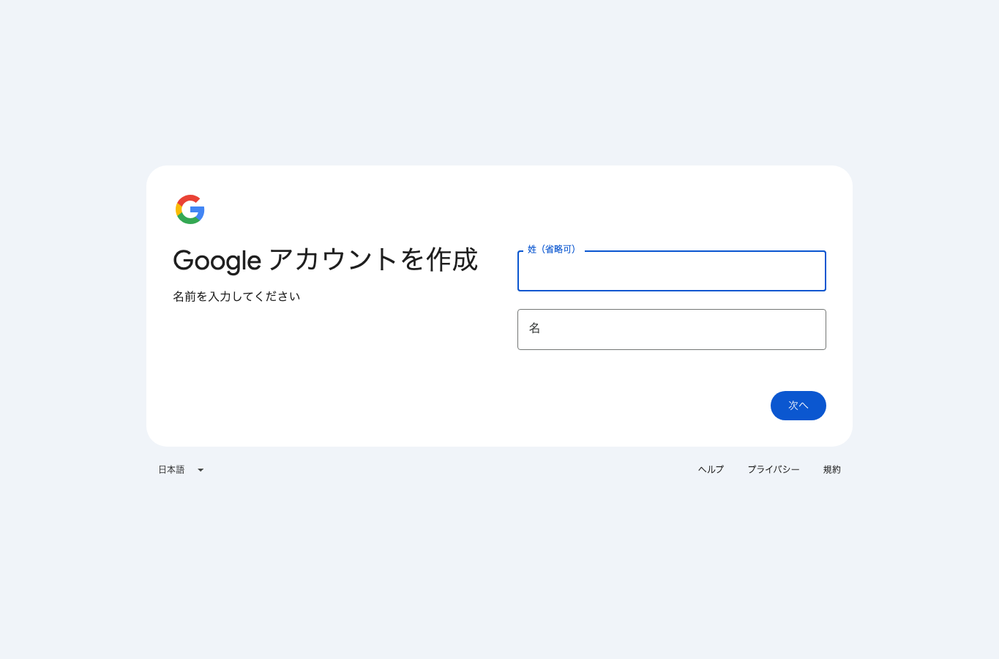
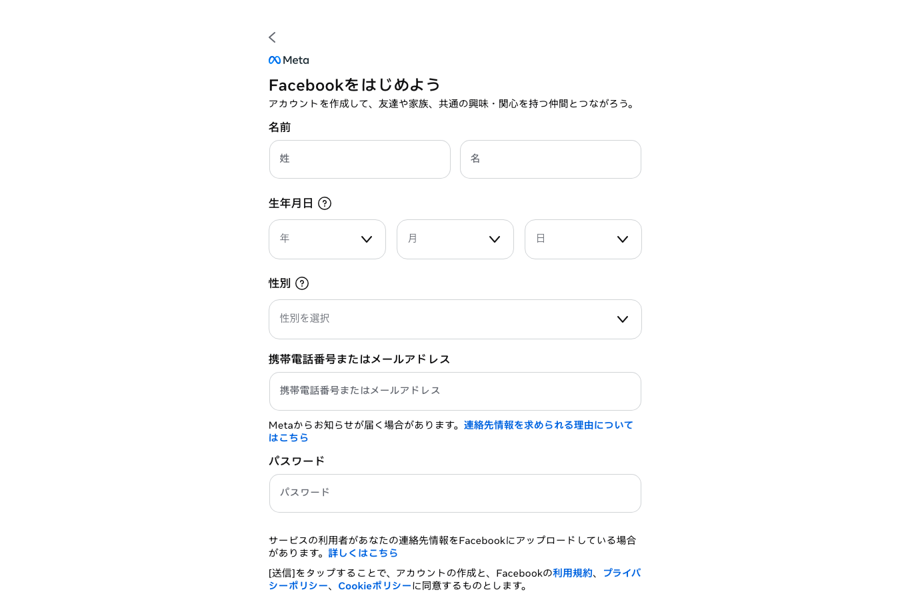
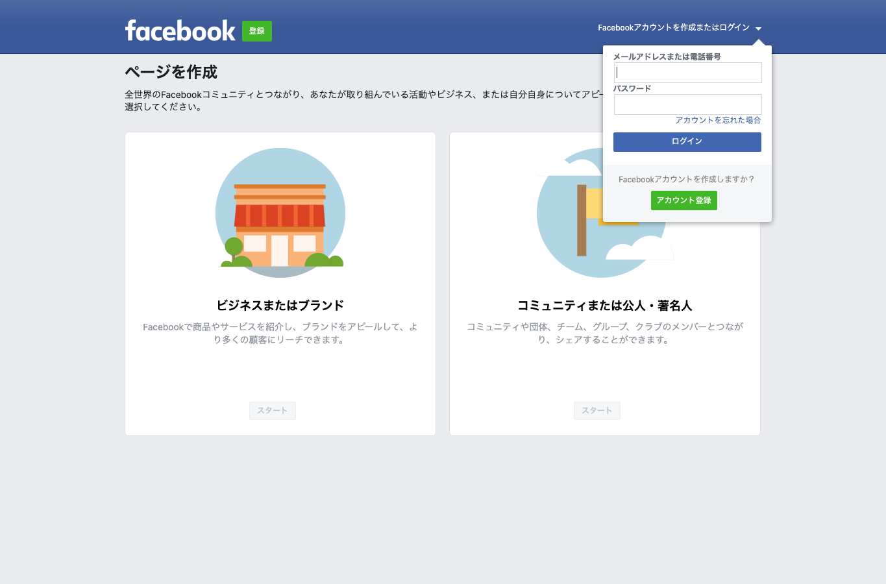
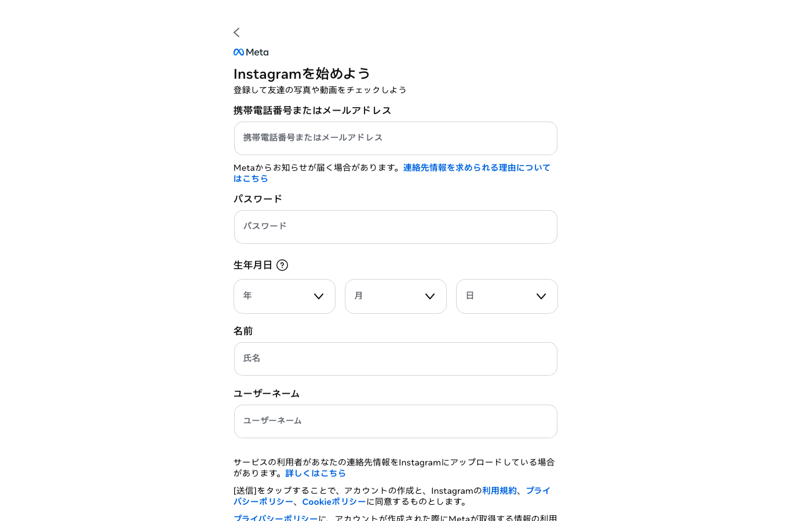
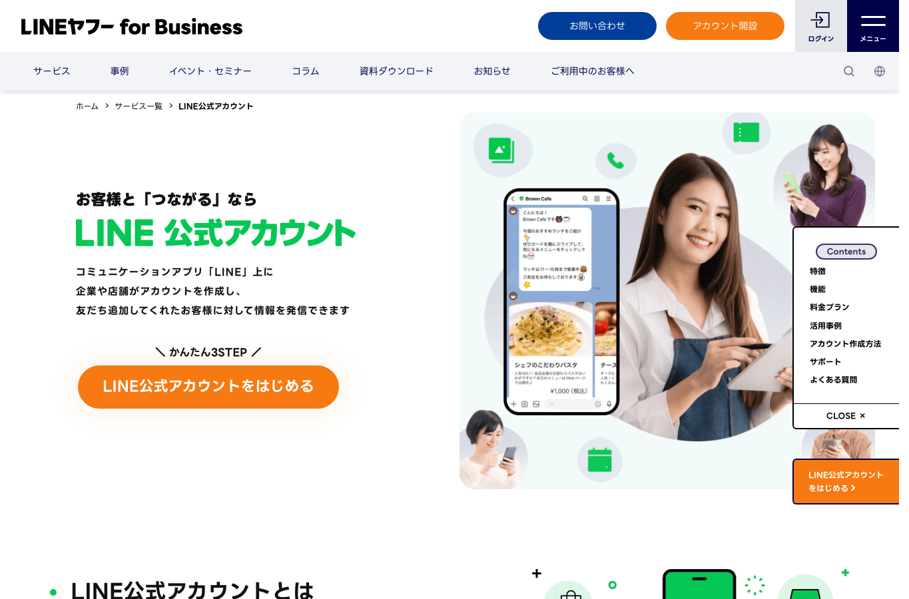
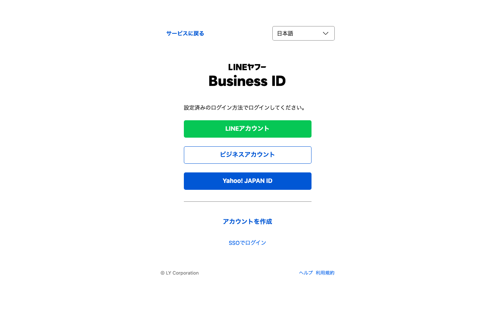
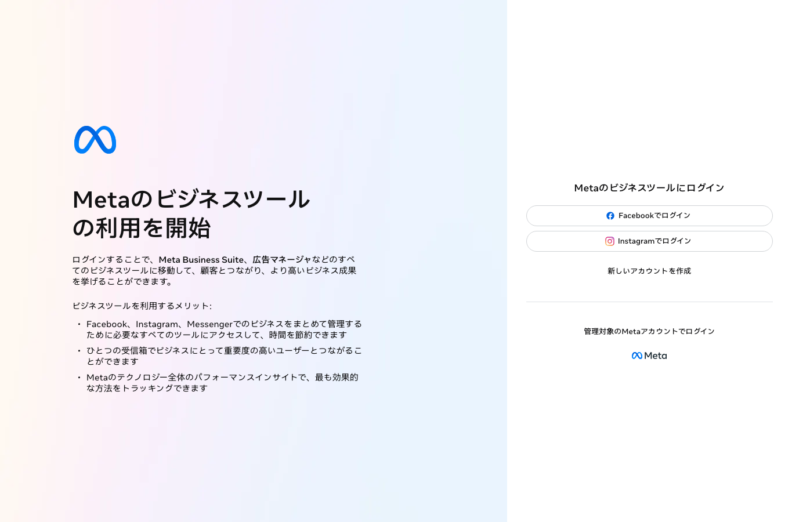
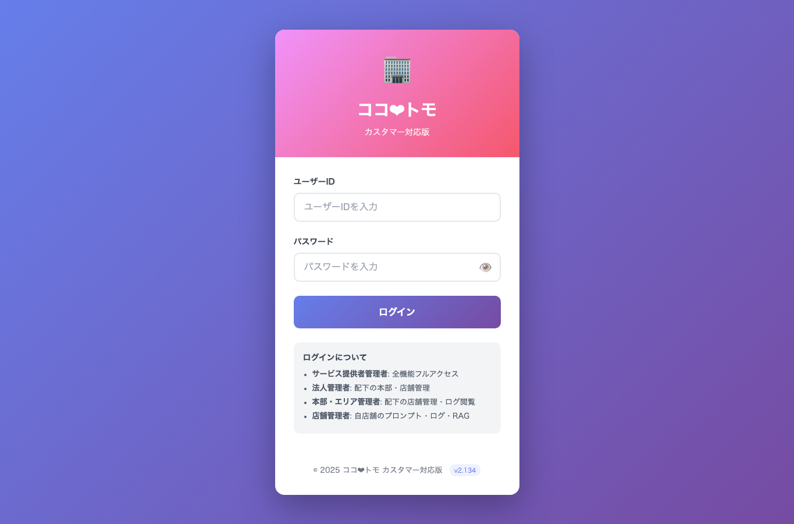
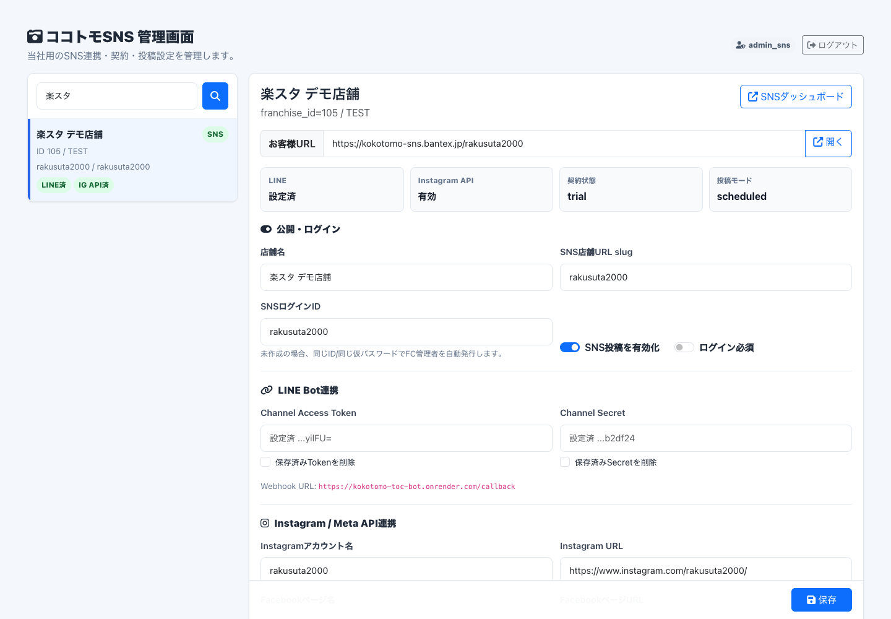
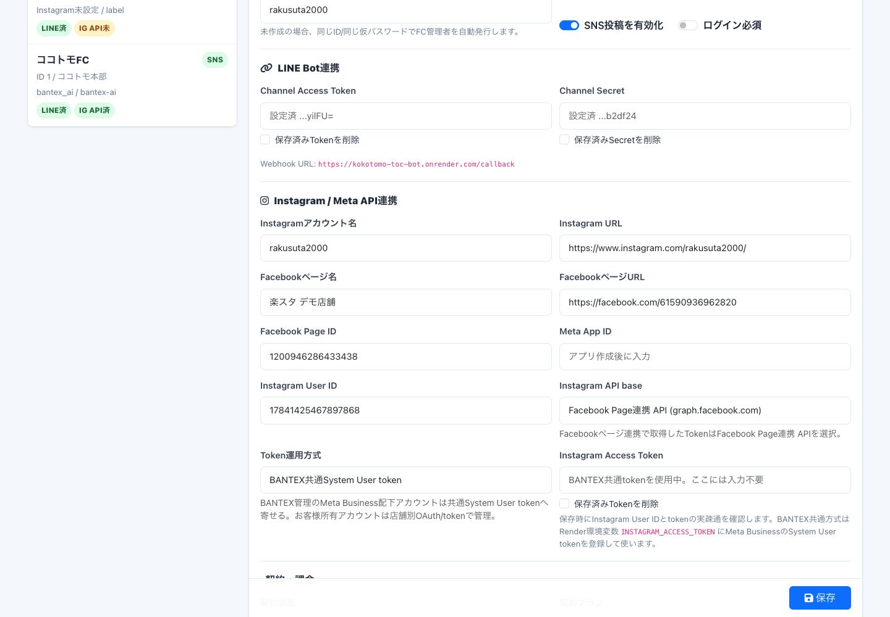

新しい店舗アカウントで、LINEからInstagram投稿できる状態まで作る
このページは、遠方の社内管理者が一人で作業できるようにした操作マニュアルです。最初に「Facebook店舗ページ」「店舗Instagram」「公式LINE」の有無を確認し、足りないものだけ作ります。実パスワードやtokenはこのHTMLには書かず、別の安全な方法で共有してください。
人間が作業すると何分かかるか
初心者が初回でやるなら、全体で 2時間から3時間 を見てください。Meta/Facebookの認証やSMSで止まると、その場で終わらない場合もあります。
最初に確認する3項目
新規のお客様は、ここから始めます。すでに持っているものは作り直さず、足りないものだけ作成します。
3項目の有無別スタート位置
| パターン | 有無 | 最初にやること | その後 |
|---|---|---|---|
| A | 3つ全部あり | BANTEX Meta Businessへページ/Instagramを追加 | 楽スタ管理画面登録、LINE投稿テスト |
| B | Facebookページあり / Instagramあり / LINEなし | 公式LINEを作成し、Messaging APIを有効化 | BANTEX Meta追加、楽スタ管理画面登録 |
| C | Facebookページあり / Instagramなし / LINEあり | 店舗Instagramを作成し、Facebookページとリンク | BANTEX Meta追加、楽スタ管理画面登録 |
| D | Facebookページなし / Instagramあり / LINEあり | Facebook店舗ページを作成し、Instagramをリンク | BANTEX Meta追加、楽スタ管理画面登録 |
| E | Facebookページあり / Instagramなし / LINEなし | 店舗Instagramを作成し、Facebookページとリンク | 公式LINE作成、楽スタ管理画面登録 |
| F | Facebookページなし / Instagramあり / LINEなし | Facebook店舗ページを作成し、Instagramをリンク | 公式LINE作成、楽スタ管理画面登録 |
| G | Facebookページなし / Instagramなし / LINEあり | Facebook店舗ページと店舗Instagramを作成 | Instagramリンク、BANTEX Meta追加 |
| H | 3つ全部なし | 店舗メール、Facebook店舗ページ、Instagram、公式LINEを順に作成 | BANTEX Meta追加、楽スタ管理画面登録 |
サンプル作成: 3つ全部ない場合
社内練習用に、BANTEX村上さんが実在する個人Facebookで、検証用の店舗資産をゼロから作るパターンです。表のHパターンとして進めます。
サンプル名の例
| 項目 | 例 | 注意 |
|---|---|---|
| Facebook個人 | 村上さん本人の実在Facebook | 新規作成しない。本人ログイン、SMS、2FAは村上さんが対応 |
| Facebook店舗ページ | 楽スタデモ村上店 | 実在店舗に見えないよう「デモ」または「検証用」を入れる |
| 店舗Instagram | rakusta_demo_murakami | プロ/ビジネス化し、Facebook店舗ページとリンク |
| 公式LINE | 楽スタデモ村上店 | Messaging APIを有効化し、Webhookを楽スタBotに向ける |
| 店舗メール | BANTEX管理の検証用メール | 認証メールを受け取れるもの。HTMLには実値を書かない |
村上さんが体験する順番
Instagram、LINE、Meta通知を受け取れる状態にします。
本人確認、SMS、2FAが出たら村上さん本人が処理します。
ページ名は「楽スタデモ村上店」など、検証用と分かる名前にします。
Instagramをプロ/ビジネス化し、Facebook店舗ページとリンクします。
Webhook URL、Channel Access Token、Channel Secretを楽スタ管理画面に登録します。
Facebook店舗ページとInstagramをBANTEX側から扱える状態にします。
LINE情報、Instagram User ID、Token運用方式、投稿時間、画像設定を保存します。
公式LINEへ写真とメモを送り、投稿案生成、ダッシュボード確認、必要ならInstagram投稿まで行います。
最初に用意するもの
店舗側で必要
- 店舗名、住所、電話番号
- 店舗メールアドレス
- 店舗責任者または社内管理者の実在Facebook個人アカウント
- 店舗Instagram用ユーザー名候補を3つ
- プロフィール画像、ロゴ、カバー画像
- テスト投稿用の写真1枚と短いメモ
BANTEX側で必要
- 楽スタ管理画面の管理者ログイン
- LINE Official Account Managerのログイン
- LINE Developersの操作権限
- Meta Business Suite / Business設定の管理権限
- BANTEX投稿Botを扱えるMeta管理者権限
- Render / 本番環境は通常触らない。token更新時だけBANTEX側で扱う
認証情報の渡し方
遠方の社内管理者が作業する場合、以下を別紙またはパスワード管理ツールで渡します。このHTMLやGitHubには実値を書かないでください。
必要なのは、個人Facebookのログイン情報ではなく、店舗Facebookページと店舗InstagramをBANTEX側Meta Business / BANTEX投稿Botから扱える権限です。
| 渡すもの | 用途 | 渡し方 |
|---|---|---|
| 楽スタ管理画面URL・ユーザーID・パスワード | 店舗設定、LINE/Instagram情報登録 | 1Password / Bitwarden / 社内の安全な共有 |
| 店舗メールアドレスのログイン | Instagram、LINE、Facebook通知確認 | 安全な共有。作業後に変更してもよい |
| LINE Business ID | LINE公式、LINE Developers | 安全な共有 |
| Meta/Facebookの承認・管理権限 | Facebookページ、Instagramリンク、Meta Business追加 | 店舗責任者本人がログインして承認。代行時のみ安全な方法で一時共有 |
お客様側の個人Facebookで権限付与する
お客様がすでにFacebook店舗ページやInstagramを持っている場合、BANTEXが個人Facebookのパスワードを預かるのではなく、お客様本人がログインしてBANTEXへの権限付与を承認します。
Meta Business設定で、お客様のFacebook店舗ページとInstagramへのアクセスをリクエストします。
ページ管理者になっている実在個人Facebookで、Meta Business SuiteまたはFacebook通知を開きます。
対象がBANTEXのBusiness Portfolio / BANTEX投稿Botであること、対象資産が該当店舗ページとInstagramだけであることを確認します。
投稿作成、コンテンツ管理、Instagram連携に必要な権限を承認します。不要なページや既存店舗の権限は触りません。
対象Instagramのprofile取得、content publishing limit取得、楽スタ管理画面のInstagram User ID保存を確認します。
| お客様に伝えること | 理由 |
|---|---|
| 個人FacebookのパスワードはBANTEXへ渡さなくてよい | 本人がログインして承認すれば、BANTEXはページ/Instagram権限だけ取得できるため |
| 承認する対象はBANTEXのBusiness Portfolio / BANTEX投稿Bot | 知らない相手に権限を渡さないため |
| 承認対象は該当店舗ページと店舗Instagramだけ | 別店舗や個人資産を誤って渡さないため |
| SMS、2FA、本人確認は本人が画面上で処理 | コードや本人確認情報をチャットに残さないため |
全体の順番
上の3項目チェックで「ない」と分かったものだけ作ります。すでにあるFacebookページ、Instagram、公式LINEは作り直しません。
このあと全部の認証で使います。
既存の実在個人アカウントで管理できるなら作成不要です。
Instagram API投稿にはFacebookページ連携が必要です。
Instagram単体ではなく、Facebookページとリンクします。
店舗が写真とメモを送る入口です。
ここでBANTEX共通tokenの投稿権限範囲に入れます。
Instagram User ID、LINE Channel情報、投稿時間、画像加工方針を入れます。
写真+メモ送信、ダッシュボード確認、必要ならInstagramへ1回だけ投稿します。
1. 店舗メールアドレスを用意
新規で用意する場合はGoogleアカウントでも構いません。法人ドメインメールがあるならそちらが望ましいです。

1 22. Facebook個人アカウントを作成または確認
Facebook個人は店舗ページを作るための入口です。店舗名ではなく、実在する個人で作ります。個人名がInstagram投稿に表示されるわけではありません。

1 2 33. Facebook店舗ページを作成
Facebookにログインした状態で、店舗ページ作成に進みます。

1 2- ページ名は店舗名にする
- カテゴリ、住所、電話番号、公式URLを入れる
- プロフィール画像とカバー画像を設定する
- ページURLとPage IDを控える
4. 店舗Instagramを作成し、ビジネス化

1 2 35. 店舗LINE公式を作成

1 2
1 2Messaging APIで設定するもの
| 項目 | 値 |
|---|---|
| Webhook URL | https://kokotomo-toc-bot.onrender.com/callback |
| Use webhook | ON |
| Verify | 成功を確認 |
| Channel Access Token | 楽スタ管理画面に保存。HTMLには残さない |
| Channel Secret | 楽スタ管理画面に保存。HTMLには残さない |
6. BANTEX側Meta Businessへ追加
店舗のFacebookページとInstagramをBANTEX側Business Portfolioに追加し、BANTEX投稿Botから見える状態にします。

1 2- Business PortfolioにFacebook店舗ページを追加
- 同じBusiness Portfolioに店舗Instagramを追加
- FacebookページとInstagramがリンク済みか確認
- BANTEX投稿Botの権限で対象Instagramが見えるか確認
- 既存店舗のページ/Instagram権限を外さない
instagram_token_source=global にします。7. 楽スタ管理画面に登録
楽スタ管理画面にログインし、店舗を検索してLINE/Instagram/投稿設定を保存します。

1 2 3
1 2 3
1 2 3 4 1
2
3
1
2
3
 1
2
3
1
2
3
新店舗で最低限入れる値
| 項目 | 入力内容 |
|---|---|
| SNS店舗URL slug | 英数字。例: sample_shop |
| SNS投稿を有効化 | ON |
| LINE Channel Access Token / Secret | LINE Developersから取得して直接貼り付け |
| Instagramアカウント名 | 例: sample_shop |
| Instagram User ID | Meta Graph APIで確認した 1784... |
| Token運用方式 | BANTEX共通System User token を選ぶ |
| 投稿方式 | 通常は予約投稿 |
| 投稿時間 | 例: 14:00 と 20:00 |
| 画像加工 | 業種に合わせる。医療介護は顔ぼかし・個人情報配慮を確認 |
8. LINEからInstagram投稿まで確認
ヘルスチェックコマンド
作業者がターミナルを使える場合は、BANTEX側で以下を実行します。
uv run --with requests --with sqlalchemy --with psycopg2-binary \
python scripts/check_instagram_health.py --franchise-id <NEW_FRANCHISE_ID>graph_status=ok、profile取得200、content_publishing_limit 200です。失敗時の見方
| 症状 | 原因の層 | 確認する場所 |
|---|---|---|
| LINEから送ったのに投稿案が出ない | LINE Webhook / Channel token | LINE Developers、楽スタ管理画面のLINE欄 |
| 投稿案は出るがInstagram投稿できない | Instagram権限 / Meta資産 / User ID | Meta Business、楽スタInstagram欄、ヘルスチェック |
Invalid OAuth access token | 古い個別token | Token運用方式をglobalにする |
Unsupported get request | BANTEX共通tokenからそのInstagramが見えていない | Meta Businessにページ/Instagramを追加 |
Application does not have permission | BANTEX投稿Botの権限不足 | Meta OAuth権限、Instagramリンク、ページ選択 |
| Facebook/Instagramが途中で止まる | 本人確認、SMS、2FA、Meta制限 | 本人または管理者がブラウザ上で対応 |
配布時の注意
- GitHub Pagesで配る場合、このページ自体はURLを知っている人が見られます。
- 実パスワード、token、App Secret、LINE secretは絶対に入れない。
- このHTMLには
noindex,nofollowを入れていますが、アクセス制限ではありません。 - 認証情報は別ルートで、権限のある社内管理者にだけ共有する。